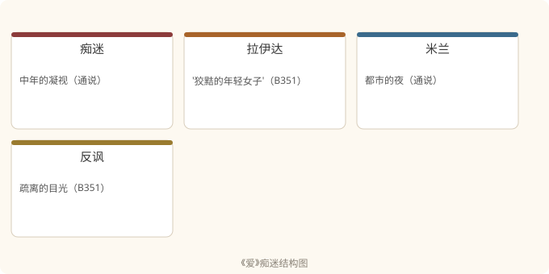

爱
一、基本信息
| 作者 | 迪诺·布扎蒂 |
|---|---|
| 成书/出版 | 1963年（Britannica B351：Un amore (1963)——中译名待核） Dino Buzzati — Encyclopaedia Britannica（百科全书） |
| 国别/地区 | 意大利 |
| 时代 | 近代 · 20世纪60年代 |
| 体裁 | 长篇小说 |
| 语言 | 意大利语 |

《爱》痴迷结构图（主题·结构图）
二、创作背景
Britannica（B351）：Un amore (1963)——'a novel about a middle-aged man and a devious young woman'。
Britannica（B351）：布扎蒂——'detached sense of irony and humor'。
题材（通说待核）：中年建筑师与米兰妓女拉伊达——痴迷与观察。
三、内容脉络
（通说待核）中年男子的痴恋：'观察'与占有。
（通说待核）米兰的夜色与'爱'的账目。
四、主要人物表
| 人物 | 身份 | 说明 |
|---|---|---|
| 乔瓦尼 | 中年建筑师 | （通说待核，B351未载） |
| 拉伊达 | 年轻女子 | （通说待核，B351：a devious young woman） |
五、主题与艺术特点
- 痴迷的观察者（B351：middle-aged man and a devious young woman）。
- '爱'的商品化（通说待核）。
- 米兰都市（B351 语境）。
六、影响与评论
- Britannica：Un amore (1963)（B351）。
Dino Buzzati — Encyclopaedia Britannica（百科全书） - Britannica：'detached sense of irony'（B351）。
Dino Buzzati — Encyclopaedia Britannica（百科全书）
七、阅读建议
难点
- '痴恋'的心理。
- 1960年代米兰都市史。
- 《爱》中译名（《爱情》）待核。
- 意大利文原版。
布扎蒂'爱'篇；与《鞑靼人沙漠》对读。
八、待核实
- 乔瓦尼/拉伊达人名核对（B351未载人名）。
- 1963年出版细节待核。
- '建筑'职业细节待核。